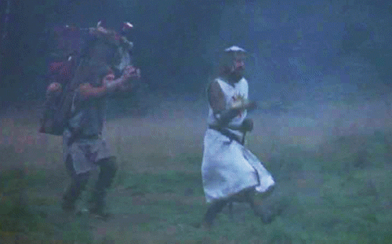

Guess your adventure! | Learn more about AJ Reel
 Welcome to this wonderful adventure of tomfoolery and debauchery(Entirely clean debauchery). What I can recommend is that you consider the followning films/shows as neuvo classics
- Monty Python(all of them)
- Star Trek in Chronological order
- Star Wars in Hatchet or Machete order
- AKIRA
- Rewatch Rick & Morty, Archer, and Game of Thrones
- The rest of netflix